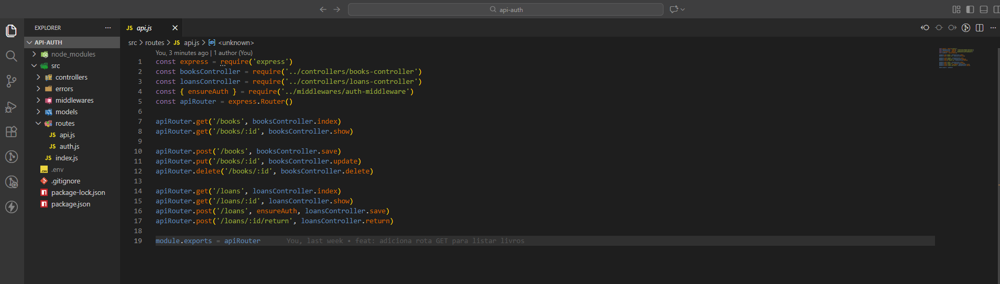
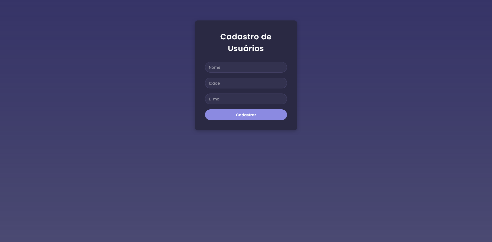
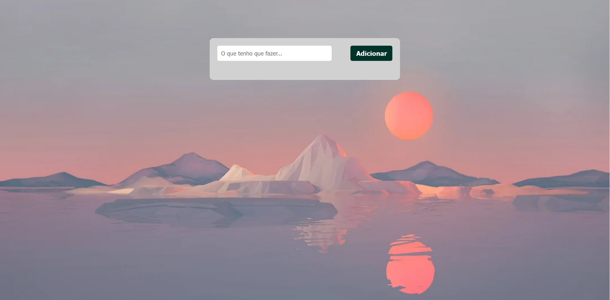
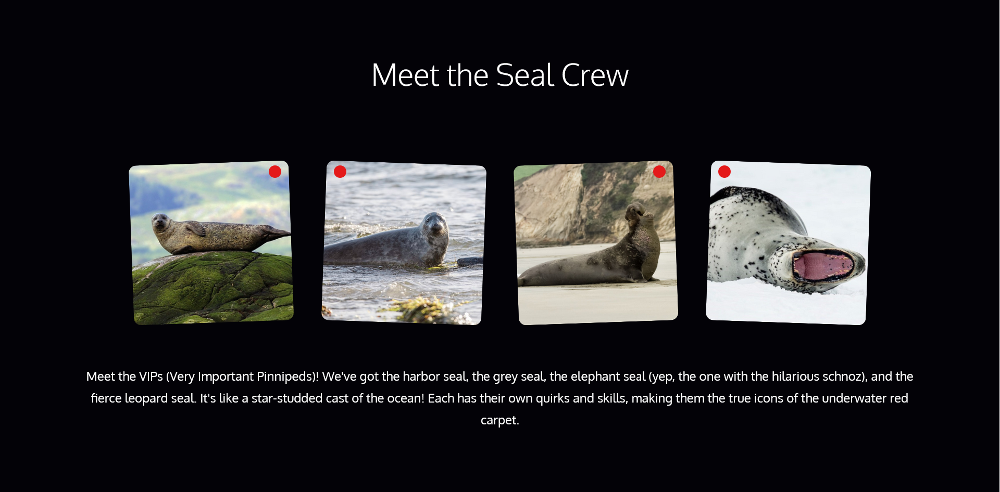

Vitor Azevedo
Desenvolvedor Full Stack
Desenvolvedor Full Stack
Desenvolvedor Full Stack com experiência prática na construção de aplicações web utilizando JavaScript, Node.js, React, Express, MongoDB e SQL. Atuo no desenvolvimento de APIs REST, implementação de autenticação com JWT, criação de rotas protegidas e organização de regras de negócio no back-end, além da construção de interfaces e integração completa entre front-end e servidor. Tenho vivência com versionamento utilizando Git e estruturação de projetos reais, aplicando lógica de programação e boas práticas de desenvolvimento para entregar código organizado, funcional e escalável. Atuei por 8 anos como oficial do Exército Brasileiro, período em que desenvolvi disciplina, liderança, resiliência e tomada de decisão sob pressão — competências que hoje aplico diretamente no desenvolvimento de software e no trabalho em equipe. Atualmente aprofundo meus estudos em bancos de dados relacionais (SQL) e arquitetura back-end, com foco em evoluir como desenvolvedor e consolidar minha atuação na construção de sistemas web. Busco uma oportunidade como desenvolvedor para contribuir com projetos reais, crescer tecnicamente e gerar impacto prático dentro do time e do produto.

API REST para gerenciamento de biblioteca com autenticação de usuários, CRUD de livros e empréstimos e rotas protegidas com JWT. Desenvolvida com Node.js e Express, focada em regras de negócio e estruturação backend.

App full stack em React, Node.js e MongoDB para gerenciar usuários com interface responsiva e moderna.

Aplicação web dinâmica e responsiva em HTML5, CSS3 e JavaScript, permitindo criar, concluir e deletar tarefas, com atualização em tempo real e persistência de dados via localStorage.

Landing page responsiva e interativa em HTML5 e CSS3, com vídeo de fundo, gradientes suaves, tipografia elegante e galeria de imagens com efeitos sutis.